Wielkopolskie
Najważniejsze miasta
Poznań
Poznań, Stołeczne Miasto Poznań[8] (niem. Posen, łac. Posnania) – miasto na prawach powiatu w zachodniej Polsce, położone na Pojezierzu Wielkopolskim, nad rzeką Wartą, u ujścia Cybiny. Historyczna stolica Wielkopolski, od 1999 r. siedziba władz województwa wielkopolskiego i powiatu poznańskiego 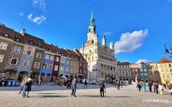Stary rynek i ratusz
Serce miasta z pięknymi kamienicami i renesansowym ratuszem. Codziennie o 12:00 na wieży ratusza pojawiają się słynne koziołki.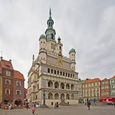
Ostrów Tumski
Najstarsza część Poznania, gdzie znajduje się katedra św. Piotra i Pawła. To tu Mieszko I przyjął chrzest, co czyni to miejsce kolebką polskiej państwowości.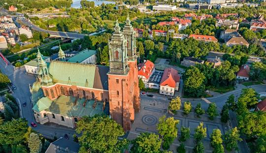
Palmiarnia Poznańska
Jedna z największych palmiarni w Europie, z egzotycznymi roślinami i akwariami. To świetne miejsce na spacer wśród tropikalnej roślinności.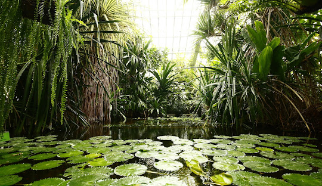
Kalisz
Miasto na prawach powiatu, drugie pod względem liczby ludności i trzecie pod względem powierzchni w województwie wielkopolskim, historyczna stolica Wielkopolski obok Poznania[6][7], stolica Kaliskiego[8], siedziba powiatu kaliskiego 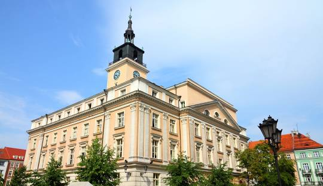Bazylika św.Józefa
Ważne miejsce pielgrzymkowe i barokowa perła Kalisza. Wewnątrz znajduje się słynny obraz św. Rodziny, otoczony kultem od XVII wieku.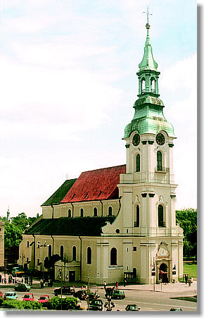
Park miejski
Jeden z najstarszych parków miejskich w Polsce, założony w XIX wieku. Znajdują się tu malownicze stawy, mostki i różnorodne gatunki drzew.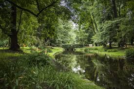
Rezerwat Archeologiczny na Zawodziu
Odtworzona wczesnośredniowieczna osada Kalisza. Można tu zobaczyć dawne chaty, umocnienia i poznać historię regionu.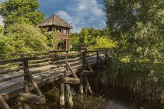
Gniezno
Świnoujście (niem. Swinemünde[4]) – miasto na prawach powiatu, uzdrowisko w północno-zachodnim krańcu Polski, najdalej wysunięte na północny zachód miasto w kraju, w województwie zachodniopomorskim z portem morskim i kąpieliskiem, położone nad cieśniną Świną oraz nad Morzem Bałtyckim, 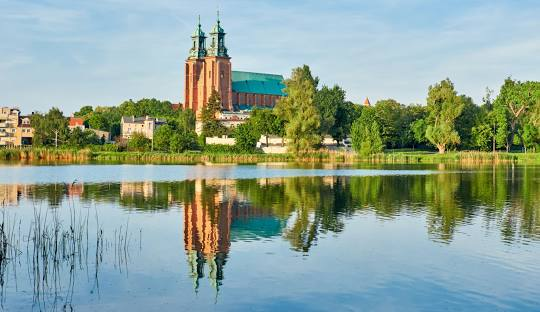Katedra Gnieźnieńska
Miejsce koronacji pierwszych królów Polski. Słynie z Drzwi Gnieźnieńskich, unikalnego zabytku sztuki romańskiej przedstawiającego sceny z życia św. Wojciecha.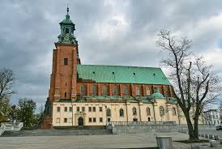
Muzeum Początków Państwa Polskiego
Nowoczesna ekspozycja pokazująca historię pierwszych Piastów. Można tu zobaczyć makiety, filmy i liczne artefakty z epoki wczesnego średniowiecza.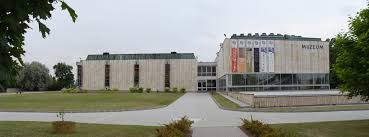
Jezioro Jelonek i Park Piastowski
Zielona oaza spokoju w sercu miasta. Idealne miejsce na spacer z widokiem na katedrę i rekreację nad wodą.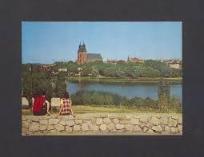